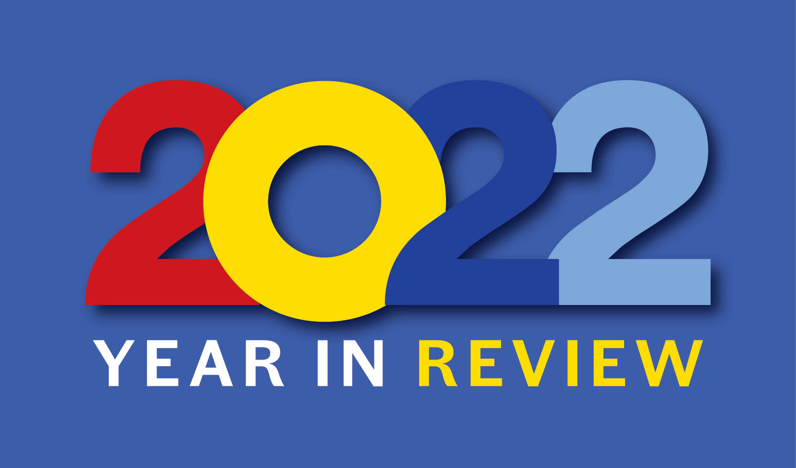

在 2022 年需要发现自己的不足之处，以及自己的一些感悟和想法！
年度总结是对过去一年工作、学习或生活中的主要事件、成果、收获和挑战进行回顾的过程，对于帮助我们反思过去、分析当前、规划未来具有重要意义。年度总结有助于我们梳理思路，总结经验教训，提高自己的能力和素质，为下一年的工作和学习做好准备。

1. 最值得记忆的时刻
💕 2022 年最值得记忆的时刻 - Top3
Top 1：新冠疫情- 无
Top 2：玩玩雪- 这一年，零零散散的隔离、开放、再隔离。尽量做到保护安全的情况下，带着孩子去博物馆、出去野营、玩玩雪、去动物园。手机里面还有很多，关于打雪仗、老虎、公园的视频。看看，发现挺好的。
Top 3：乐队演出- 终于有机会可以看乐队的现场演出了，虽然每次去都是冒着生命危险再看，但是看完之后，还是心情挺舒畅的。毕竟，自由的机会并不是很多。
2. 读过最喜欢的书籍
📖 2022 年读过最喜欢的书籍 - Top 5
Top 1：《真希望我父母读过这本书》- 作者名称：**[英] 菲利帕·佩里**
- 豆瓣评分：
8.7 - 阅读笔记：因为发现自己身上有很多问题，我开始回溯寻找答案。因为想摆脱这些问题且不想让这些问题影响到我今后的人生，我开始寻求解决问题的方法。我的父母没有看过这本书，但我希望我的孩子庆幸我曾读过这本书。
Top 2：《生而摇滚》- 作者名称：郭小寒
- 豆瓣评分：
5.8 - 阅读笔记：一本中国摇滚乐对的编年史，可以发现每个乐队一路走来都非常的不容易，想要生根发芽却发现土壤不允许。幸好，因为乐夏让摇滚乐进入的大众的视野，让他们有了土壤，可以发光发热。
Top 3：《奈飞文化手册》- 作者名称：**[美] 帕蒂·麦考德**
- 豆瓣评分：
8.1 - 阅读笔记：太残忍了，奈飞以令人震惊的速度进化背后，是十多年以来围绕着如何最大化高绩效所探索出的狼性道路，虽然很疯狂，很霸道，但是又不得不承认这种颠覆性的思维是科学合理的，铁条戒律令人敬佩，但在中式文化中，暧昧的人情黏连仍然无可避免。
3. 看过最喜欢的节目
🎬 2022 年看过最喜欢的电影/电视剧/综艺节目 - Top 5
Top 1：《无依之地》- 导演演员：赵婷 - 弗兰西斯·麦克多蒙德/大卫·斯特雷泽恩
- 豆瓣评分：
8.1 - 剧情简述：在
2008年的金融危机下，经济支柱石膏厂倒闭导致人去镇空，价值丈夫的去世使弗恩不得不将家搬上了改装后的厢式货车，一边打工一边西行，一路上，她和许多厢式货车寄居者相遇、相识，彼此帮助，并缔结了友谊。 - 观影记录：身体的箭头虽指向前方，灵魂的箭头却指向过去，被留下来的人如何与自己的余生相处，这就是影片的主旨。灾难到来之前，最先受到冲击的往往都是普通大众，没有经历过的人，不知道这意味着什么。如果避免悲剧的发生，而不是在权术之前左右横跳，这未免也太过狭隘了些！虽然历史是没有记忆的，但是我们是不是应该学会思考？脚踏实地，让后仰望星空！
Top 2：《龙与雀斑公主》- 导演名称：细田守
- 豆瓣评分：
9.0 - 观影记录：人生本来就是救赎和自我救赎，治愈他人的同时也治愈了自己。
Top 3：《子弹列车》- 导演演员：大卫·雷奇 - 布拉德·皮特/乔伊·金
- 豆瓣评分：
7.8 - 剧情简述：久违地爽到了，好莱坞爆米花该有的样子。动作+悬疑+剧情基本都拉满了，让人看着很爽，并且看完之后酣畅淋漓。
Top 4：《万里归途》- 导演名称：饶晓志
- 主演列表：张译/王俊凯
- 豆瓣评分：
7.2 - 观影记录：全剧基本都是张译把整个剧情打起来了，不愧是影帝，很棒。顺便说下，看到王俊凯很跳戏，割裂感太强了。
Top 5：《一年一度喜剧大赛 2》- 出品公司：爱奇艺 - 喜剧/真人秀
- 主演列表：黄渤/李诞/马东/于和伟
- 豆瓣评分：
7.7 - 观影记录：讲道理，确实算是国内同类节目的佼佼者了，可以发掘出很多有实力的演员和编剧。虽然很多人，在其他节目都或多或少的出现过，但是奈何节目都不知名。
| 电影名称 | 电影类型 | 个人打分 | 电影评价 |
|---|---|---|---|
| 铁血战士:猎物 | 动作/科幻 | 5 分 | 只有一个铁血战士未免缺少点对抗性 |
| 独行月球 | 喜剧/科幻 | 7 分 | 情景设定挺好的；人真的可以去外星球生活吗？ |
| 坠落 | 动作/惊悚 | 6 分 | 剧情问题导致让人后续无法进入剧情；后续硬反转 |
| 子弹列车 | 动作/惊悚 | 9 分 | 可圈可点；有深度；有逻辑；有剧情；有动作 |
| 侏罗纪世界 3 | 动作/科幻 | 7 分 | 感觉没有之前的让人震撼；确实也被吓了一跳 |
| 坏蛋联盟 | 喜剧/冒险 | 8 分 | 虽然剧情套路都能猜到；但是还是能够感到乐趣 |
| 萌鸡小队:萌闯新世界 | 儿童/冒险 | 5 分 | 传统套路动画电影；中规中矩 |
| 精灵旅社 4:变身大冒险 | 喜剧/冒险 | 7 分 | 变身这一设定挺有意思的；剧情有起有伏 |
| 新神榜:杨戬 | 奇幻/冒险 | 8 分 | 除了后续剧情收尾草率外；人物塑造/影片质量都非常棒 |
| 雷神 4:爱与雷霆 | 动作/冒险 | 3 分 | 无脑爽剧；基本没有剧情可言 |
| 非凡守护 | 剧情/犯罪 | 4 分 | 真人真事改编；但是讲道理确实没啥意思 |
| 断魂小丑 2 | 动作/惊悚 | 2 分 | 确实血腥暴力纯恶心；但是道具有点假 |
| 无依之地 | 剧情/西部 | 9 分 | 经济萧条是一场灾难；请不要再在上面重蹈覆辙了 |
| 西行记之穷奇地洞 | 动画/奇幻 | 5 分 | 剧本稀烂导致完全没有浸入感；电影感差 |
| 七魂龙神丸之再会 | 动画/冒险 | 4 分 | 除了满满小时候的回忆就没有任何然后了 |
| 倚天屠龙记之圣火雄风 | 武侠/古装 | 4 分 | 没有小时候的味道；把倚天剧情又重温了一遍 |
| 倚天屠龙记之九阳神功 | 武侠/古装 | 4 分 | 没有小时候的味道；把倚天剧情又重温了一遍 |
| 棺山古墓 | 奇幻/冒险 | 2 分 | 果然英叔之后再无僵尸片；元彪也老了 |
| 这个杀手不太冷静 | 喜剧/剧情 | 7 分 | 感觉麻花的这个确实还不错；搞怪但也搞笑 |
| 非凡公主 | 动作/奇幻 | 3 分 | 除了打打打就是打打打；一个人打一个军队；无脑 |
| RRR | 动作/剧情 | 6 分 | 剧情确实很套路但是看下来异常舒畅；印度神片 |
| 一车口罩 | 疫情/剧情 | 4 分 | 能够感觉到导演想说点什么，但是最后什么都没说 |
| 新洗冤录 | 奇幻/古装 | 2 分 | 和老版电视剧的洗冤录完全不是一个档次；恰饭电影 |
| 光年正传 | 科幻/动画 | 6 分 | 整部片子非常无聊，有不少小创意和致敬，但是没亮点 |
| 忍者忍龟之崛起 | 动作/动画 | 4 分 | 纯纯的贩卖忍者神龟这个 IP 而已；动画也穿越 |
4. 听过最喜欢的播客
🎬 2022 年看过最喜欢的播客节目 - Top 4
Top 1：《每个人在家中供奉自己&指环间的虚空》- 播客名称：
大内密谈 - 思考记录：虚拟现实的另一个我，你好！
- 播客名称：
Top 2：《池子:喜剧的内核是幸灾乐祸》- 播客名称：
大内密谈 - 思考记录：喜剧的内核就是悲剧。
- 播客名称：
Top 3：《梁龙: 二手的地方必有光芒》- 播客名称：
大内密谈 - 思考记录：虽然走过很多弯路，但是持之以恒就有出路。
- 播客名称：
Top 4：《吴宁越: 布衣乐队就是土摇天花板》- 播客名称：
大内密谈 - 思考记录：三哥，从节目看确实是一个走心的人。
- 播客名称：
- 大内密谈 - 西游漫游指南
| 题目名称 | 思考记录 |
|---|---|
| vol.710 哪吒的真相!战斗机器一般的存在! | 关于哪吒的脑洞 |
| vol.711 山海经里神奇动物知多少 | 山海经原来就是一本漫画 |
| vol.771 蟠桃会平衡众大佬 沙悟净潜心无间道 | 沙和尚是天界的卧底 |
| vol.781 昆仑山遍藏宝贝 红孩儿身世案考 | 关于红孩儿的脑洞 |
| vol.793 舌尖上的西游 幻境中的垂涎 | 唐僧肉怎么做才最好吃 |
| vol.803 盂兰盆会藏神机 唐代战狼历艰辛 | 盂兰盆节是鬼节吗 |
| vol.845 大羿转身猪刚鬣 不负如来不负卿 | 关于猪八戒的脑洞 |
| vol.896 薛定谔的真假美猴王之说 | 孙悟空是不是被六耳猕猴打死了 |
| vol.917 谁承想白龙马才是二师兄呢 | 谁才是二师兄 |
| vol.933 西游之关卡且待我来盘一盘 | 西游关卡设置 |
| vol.985 孙猴子也许并不想再压 500 年 | 孙悟空的脑洞 |
| vol.1004 西游路上十四载目睹之大妖小怪 | 有名有姓的小妖怪 |
| vol.1035 九灵师狮同归一 元圣盗道堕三途 | 九灵元圣又是谁呢 |
| vol.1046 地府考编升迁指南 | 地府升迁 |
| vol.1047 地府旅行漫游指南 | 地府旅行 |
- 大内密谈 - 音乐理性和思考
| 题目名称 | 思考记录 |
|---|---|
| vol.805 乐队十点到 EP01:声音玩具 | 了解下声音玩具这个乐队 |
| vol.808 乐队十点到 EP02:Carsick Cars | 我们要有能力满足自己的表达！ |
| vol.811 乐队十点到 EP03:白皮书乐队 | 清河河畔散步式对谈 |
| vol.815 乐队十点到 EP04:福禄寿 | 了解下三胞胎的乐队之路 |
| vol.817 乐队十点到 EP05:超级斩 HyperSlash | 愿意相信的世界就是真实的世界 |
| vol.852 跟反光镜不聊音乐且有点吵的一夜 | 很早之前都开始听的乐队 |
| vol.878 玉帝还真不是一弱鸡啊同学们 | 我们可能被影视剧欺骗了 |
| vol.884 刘堃: 喝了这杯低苦艾再问我什么是兰州 | 一起看看低苦艾乐队的发展史 |
| vol.887 左小祖咒:情绪稳定的人不能干艺术 | 胡说八道瞎扯淡和正经思考 |
| vol.916 马頔:音乐不算正业,活着才是 | 马老师的各种哲学思考 |
| vol.920 岛屿心情这一路走来还真是笑中带泪啊 | 岛屿的那些洞穿人心的好作品 |
| vol.924 今儿我们 listen to 苏阳苏伯伯 | 为黄河和河边的人与歌立传 |
| vol.942 谢天笑: 造就摇滚明星的是命运 | 不演出感觉自己没有生活 |
| vol.952 煮酒论电音：藏匿于年轮中的时代往事 | 20 多年间经典的电子音乐作品 |
| vol.953 煮酒论电音: 深陷于缝隙中的荒唐时光 | 传奇电音作品和大神们的故事 |
| vol.969 梁龙: 二手的地方必有光芒/上 | 聊聊老贝比的成长发展史 |
| vol.970 梁龙: 二手的地方必有光芒/下 | 聊聊二手玫瑰的发展史 |
| vol.973 弹壳: Rapper 的爆笑往事和宅生活 | 没想到蛋壳还是一个钢琴家 |
| vol.976 吴宁越: 布衣乐队就是土摇天花板 | 三叔那种朴实和热忱 |
| vol.977 摇滚乐是否欺骗了我们?(A) | 务实又务虚的摇滚乐的那些事 |
| vol.979 摇滚乐是否欺骗了我们?(B) | 摇滚乐究竟是有多大的魔力 |
| vol.982 马条: 燃一把篝火 去一趟塞外 | 美食圈里最会弹吉他的民谣诗人马条 |
| vol.1003 我们和张帆校长聊聊 710 滚圈事变 | 八卦滚圈往事 |
| vol.1016 海边的海朋森 | 海朋森乐队的故事 |
- 大内密谈 - # 我们的武侠时代
| 题目名称 | 思考记录 |
|---|---|
| vol.987 我们的武侠时代 1: 缘起和一个字头 | 港剧；慢慢的都是回忆 |
| vol.988 我们的武侠时代 2: 起飞和几对拍档 | 港剧；慢慢的都是回忆 |
| vol.995 我们的武侠时代 3: 神雕, 天龙, 和难念的经 | 港剧；慢慢的都是回忆 |
| vol.996 我们的武侠时代 4: 笑傲江湖和几对老鬼 | 人物；慢慢的都是回忆 |
| vol.1006 我们的武侠时代 5: 倚天屠龙和台剧岁月 | 台湾；慢慢的都是回忆 |
| vol.1007 我们的武侠时代 6: 流水的小宝铁打的精神 | 往事；慢慢的都是回忆 |
| vol.1024 我们的武侠时代 7: 老鬼精神, 未来可期 | 精神；慢慢的都是回忆 |
| 题目名称 | 思考记录 |
|---|---|
| vol.869 池子:喜剧的内核是幸灾乐祸 | 了解不一样的池子 |
| vol.880 妖怪博主和历史博主本来想聊三星堆 | 其实我们并没有了解三星堆文化 |
| vol.936 本来想跟土豆吕严聊漫才和 Sketch 的 | 一年一度喜剧大赛最佳组合 |
| vol.983 建筑学是否欺骗了我们？ | 一起聊聊关于建筑的二三事 |
| vol.984 听庞宽说说这 14 天是怎么过来的 | 庞宽宽搏士行为艺术 |
| vol.993 虽然会被骂,但还是得聊聊唐山事件 | 公共安全；社会权力 |
| vol.1021 池子说我离喜剧越来越近了 | 展示了一个不走寻常路的人类样本 |
| vol.1026 被阉割の宫本武藏 | 盘点在正史/野史/杜撰的宫本武藏 |
| vol.1023 我们曾在合金弹头里那么快乐 | 合金弹头游戏发展记录编年史 |
| vol.1041 每个人在家中供奉自己&指环间的虚空 | 游戏中映射出现实世界的思考 |
| vol.1048 浪谈日本漫画黄金时代(SIDA A) | 日本漫画编年史；日本漫画是如何发展的 |
| vol.1049 浪谈日本漫画黄金时代(SIDE B) | 日本漫画三位划时代的漫画大佬闪亮登场 |
| vol.1050 关于我卖房拍电影竟然灵异频发这件事 | 用心去纪念逝去的亲人；不要再见雨花塘 |
5. 记印象最深的地方
🌁 2022 年去过印象最深/最美的地方 - Top 3
Top 1：《无》- 无
Top 2：《无》- 无
Top 3：《无》- 无
6. 我的思考在于自己
🎊 一句话和 2022 告别，迎接 2023！
- 🤩 最有成就感的事
- 坚持写博客和使用番茄工作法！
- 💃🏻 自己最大的进步
- 开始规划自己的生活，让生活变得多彩！
- 🌈 仍留下的遗憾
- 对于编程还是天分不足呀，难道是骨子里带来的，哈哈哈